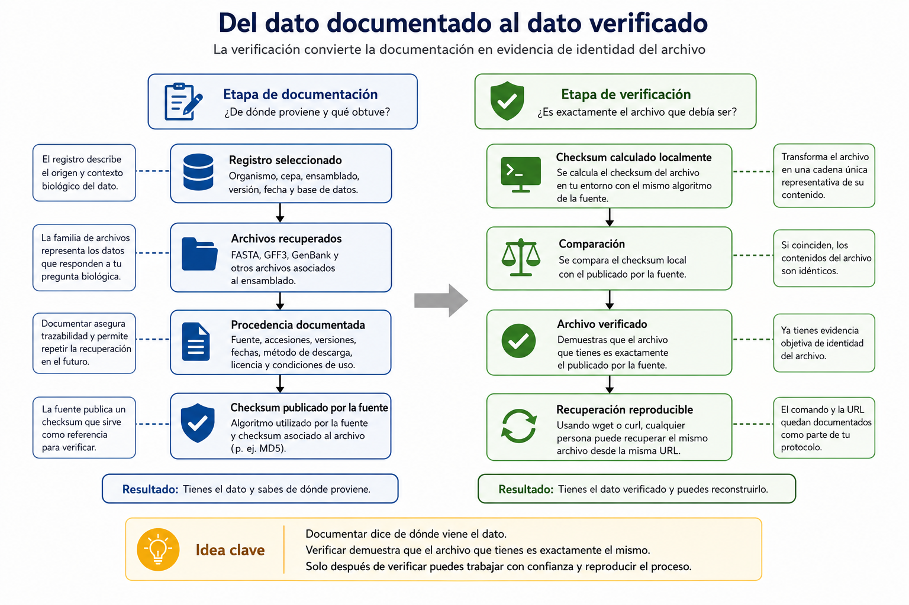
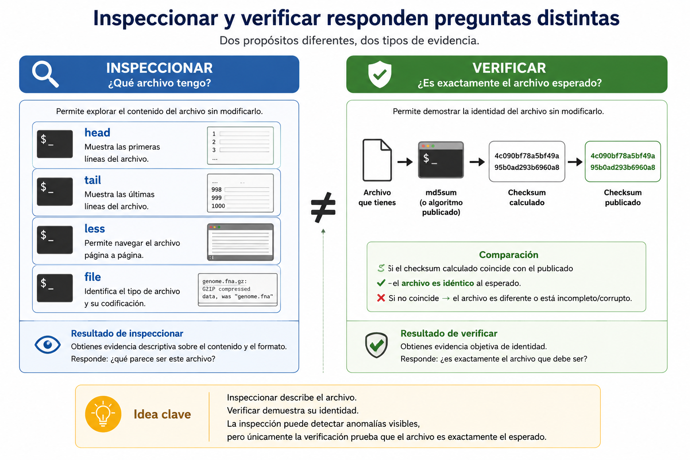

S9 — Verificar: inspección y transferencia de datos biológicos
Antes de clase repasarás brevemente qué ya sabes hacer (S3–S5) y leerás las secciones marcadas como indispensables, además de completar un primer intento breve: un plan de inspección y transferencia para tus propios archivos, sin ejecutar todavía ningún comando. Durante el taller inspeccionarás, verificarás y recuperarás datos reales, cerrando los campos que quedaron pendientes en tu ficha de procedencia desde S8. Después completarás la Tarea 5. El primer intento es formativo: importa que muestre tu razonamiento, aunque contenga errores corregibles.
Ficha del módulo
| Elemento | Descripción |
|---|---|
| Sesión | S9, 2 horas |
| Unidad | U3. Datos y bases de datos biológicas |
| Competencia principal | C. Manejo de datos y bases de datos biológicas |
| Competencias integradas | A. Documentación reproducible; B. Entorno Unix |
| Propósito | Demostrar la reproducibilidad operativa de un conjunto de datos biológicos: que cualquier persona puede obtener exactamente el mismo archivo y verificar que es idéntico, sin importar el mecanismo de recuperación (navegador, wget, curl) ni el de transferencia (cp, scp) que se utilice. |
| Consulta previa del Plan | Material clásico L4–L5, diapositivas correspondientes; este módulo lo sustituye como lectura autocontenida |
| Lectura indispensable | Secciones 1–6 y Práctica 1 de este módulo, 20–25 min (gran parte ya la dominas desde S3–S5) |
| Lectura de consulta | ProfeUnix Bioinfo, para ampliar opciones y ejemplos de cada comando (cajas de Sintaxis mínima); manuales oficiales en Referencias |
| Primer intento | Plan de inspección y transferencia para tus propios archivos, 10–15 min |
| Evidencia | Ficha de procedencia sin campos pendientes y avance de la Tarea 5 |
| Tarea numerada | Tarea 5 — Transferencia verificable de datos biológicos |
Relación con lo que ya sabes
S7 S8 S9
Interpretar → Seleccionar y documentar → Verificar y hacer reproducibleEn S8 seleccionaste un registro, recuperaste su familia de archivos mediante el navegador y documentaste su procedencia. Dos campos de tu ficha quedaron deliberadamente sin completar:
- Checksum calculado localmente: Pendiente (S9)
- Resultado de la comparación: Pendiente (S9)La mayor parte de las herramientas que necesitas ya las conoces. La única incorporación nueva consiste en recuperar directamente un archivo desde una URL mediante wget o curl; el resto reutiliza habilidades adquiridas en S3–S5:
| Habilidad que necesitas | Dónde la aprendiste | Qué cambia en S9 |
|---|---|---|
Inspeccionar un archivo sin modificarlo (head, tail, less, file) |
S5 | El objeto que inspeccionas: FASTA, GFF3 y GenBank en vez de pacientes.md |
| Calcular un checksum y compararlo | S3 (origen/destino), S4 (antes/después de copiar) | El algoritmo: la fuente publicó MD5, no SHA-256 |
Verificar un archivo antes y después de copiarlo (cp) |
S4 | El destino: tu propia estructura data/source/, no una carpeta de práctica |
Lo único que falta es una pregunta que S8 dejó abierta a propósito:
¿Puedo reconstruir la descarga de mis archivos sin depender de haber hecho clic en el lugar correcto del navegador, y demostrar que el resultado es exactamente el mismo dato?
Esa pregunta introduce lo único genuinamente nuevo de la sesión: wget y curl, dos programas que recuperan un archivo directamente desde una URL, de modo que el propio comando queda documentado en tu protocolo como evidencia verificable — algo que un clic en un navegador no puede ofrecer.
El razonamiento sigue el modelo del curso, con sus pasos nombrados para esta sesión:
Pregunta → Evidencia → Inspección → Verificación → Recuperación reproducible → Transferencia → DocumentaciónEsta sesión no descarga datos nuevos ni cambia de registro ni de ensamblado. Trabajas exclusivamente con el conjunto de datos que ya seleccionaste y documentaste en S8.
Resultados de aprendizaje
Al finalizar la sesión podrás:
- Inspeccionar los archivos de un conjunto de datos biológico sin modificarlos, reutilizando las herramientas de S5.
- Distinguir inspección de transformación en el contexto de datos que no deben alterarse.
- Calcular el checksum local de un archivo y compararlo con el publicado por la fuente, cerrando la verificación iniciada en S8.
- Explicar la diferencia entre descargar mediante navegador y recuperar reproduciblemente desde la terminal.
- Utilizar
wgetocurlpara reconstruir una descarga de manera reproducible. - Demostrar, mediante comparación de checksums, que un archivo sigue siendo el mismo después de recuperarlo o transferirlo a su ubicación final.
- Documentar la verificación completa en la ficha de procedencia y en
doc/protocolo.md.
Lista de verificación previa
Antes de comenzar confirma:
No necesitas volver a elegir un ensamblado ni descargar de nuevo la familia completa. Trabajas con lo que ya tienes en data/source/.
Ruta de S9
| Momento | Actividad | Producto | Tiempo estimado |
|---|---|---|---|
| Antes de clase | Leer secciones 1–6 | Notas y dudas | 20–25 min |
| Antes de clase | Práctica 1: plan de inspección y transferencia | Plan escrito, sin ejecutar | 10–15 min |
| Taller | Retomar S8: confirmar material y campos pendientes | Punto de partida compartido | 10 min |
| Taller | Inspección de los archivos de S8 (Práctica 2) | Evidencia de inspección | 20 min |
| Taller | Cálculo y comparación del checksum local (Práctica 3) | Campos de la ficha completados | 20 min |
| Taller | Recuperación reproducible con wget/curl (Práctica 4) |
Segundo checksum comparado | 30 min |
| Taller | Transferencia verificable a la ubicación final (Práctica 5) | Checksum antes/después | 25 min |
| Taller | Cierre y ficha final | Ficha sin pendientes | 15 min |
| Después | Completar la Tarea 5 en doc/protocolo.md |
Transferencia documentada | 40–60 min |
1. De la ficha pendiente a la verificación operativa [Indispensable]
S8 cerró con una advertencia explícita: conserva los archivos descargados, intactos, porque los necesitarás para S9. Ese es tu punto de partida: no hay nada que volver a descargar por el navegador, ni ningún dato nuevo que buscar en NCBI.
Lo que sí falta es operar sobre esa evidencia. En S8 documentaste qué checksum publicó la fuente; en S9 vas a calcular el que corresponde a tu copia y a compararlo. La diferencia es la misma que ya viste entre interpretar (S7) y recuperar (S8): ahora pasas de tener el dato documentado a tener el dato verificado y recuperable de forma reproducible por cualquier persona.

El patrón es el mismo que ya conoces: calcular un checksum, compararlo con una referencia y decidir si el archivo es confiable. Lo distinto aquí es el origen de esa referencia: no la generaste tú en otra máquina, sino que la publicó una base de datos internacional.
Qué debes recordar
- S8 ya te dejó el dato y el checksum publicado; S9 no repite esa selección.
- Verificar operativamente significa calcular y comparar, no solo documentar.
- El patrón de verificación (calcular → comparar → decidir) es el mismo que ya usaste en S3 y S4.
- La meta no es ejecutar comandos: es demostrar que otra persona puede obtener el mismo archivo y confirmar que es idéntico.
2. Inspeccionar sin transformar [Indispensable]
Antes de calcular cualquier checksum conviene mirar el archivo. No para verificar su integridad —eso lo hace el checksum, no una mirada— sino para confirmar que tienes lo que crees tener: que el archivo no está vacío, que su primera línea corresponde al formato esperado, que su tamaño es razonable.
Un archivo FASTA truncado a la mitad puede seguir abriendo y mostrando una definición válida (S8, sección 6). Por eso una inspección visual nunca sustituye al checksum: te orienta, pero no demuestra integridad.
head, tail, less y file no modifican el archivo que leen. Aplícalas ahora a tus propios datos:
| Pregunta | Herramienta | Qué confirma |
|---|---|---|
¿Cómo empieza genome.fna? |
head |
La línea de definición FASTA que ya interpretaste en S7 |
¿Cómo termina genomic.gff? |
tail |
Que el archivo no se cortó antes de la última línea |
| ¿Qué tipo de contenido reporta el sistema? | file |
Que no se trata de un archivo comprimido o binario inesperado |
| ¿Necesito recorrer el archivo completo? | less |
Navegación sin cargarlo todo en pantalla |

Inspeccionar no es transformar. head, tail, less y file leen el archivo; no lo abren para editarlo. Si en algún momento necesitas modificar un dato, el resultado va a data/processed/, nunca sobre el original (S8, sección 5).
Inspeccionar responde ¿qué archivo tengo? Transformar responde ¿qué archivo quiero obtener? La primera pregunta nunca modifica el original.
Sintaxis mínima — head
head genome.fna¿Qué hace? Muestra las primeras líneas del archivo sin modificarlo.
🤖 Prompt para ProfeUnix Bioinfo: > Explícame el comando head. > ¿Qué hace la opción -n? > Muéstrame ejemplos usando archivos FASTA.
Sintaxis mínima — tail
tail genomic.gff¿Qué hace? Muestra las últimas líneas del archivo sin modificarlo.
🤖 Prompt para ProfeUnix Bioinfo: > Explícame el comando tail. > ¿Cómo veo solo las últimas 5 líneas?
Sintaxis mínima — file
file genome.fna¿Qué hace? Identifica el tipo de contenido del archivo sin abrirlo ni modificarlo.
🤖 Prompt para ProfeUnix Bioinfo: > Explícame el comando file. > ¿Cómo distingue un archivo de texto de uno comprimido?
Sintaxis mínima — less
less genomic.gbff¿Qué hace? Permite recorrer el archivo página por página sin cargarlo completo; sal con q.
🤖 Prompt para ProfeUnix Bioinfo: > Explícame el comando less. > ¿Cómo busco una palabra dentro de less?
RECUERDA: La inspección orienta; el checksum verifica — no son intercambiables. Ninguna inspección debe alterar el archivo original.
3. Calcular y comparar el checksum local [Indispensable]
El procedimiento —calcular, comparar, decidir— ya lo conoces de sesiones anteriores; aquí se aplica sin cambios.
Lo que cambia es el algoritmo. La fuente que consultaste en S8 publicó sus checksums con MD5, no con SHA-256 (S8, sección 6). La regla es iguala el algoritmo que usó la fuente, no el que usaste antes. Por eso aquí usarás md5sum en vez de sha256sum.
En esta sesión usamos MD5 porque es el algoritmo que publica NCBI. Otros repositorios pueden usar SHA-256 u otro algoritmo distinto: la regla no cambia, solo el nombre del comando.
Archivo verificado: genome.fna (tal como lo entregó la fuente)
Checksum publicado por la fuente: 4c090bf78a5bf49a95b0ad293b6960a8
Checksum que calculas sobre ese mismo archivo: (lo obtienes con md5sum)
¿coinciden? → si sí, queda verificadoEl checksum siempre corresponde a un archivo concreto, en el estado exacto en que la fuente lo publicó. Nombrarlo explícitamente evita el error más común de esta verificación: comparar, sin darte cuenta, dos versiones distintas del mismo dato —por ejemplo, una comprimida y otra descomprimida (sección 4).
Si el checksum que calculas no coincide con el publicado, no uses el archivo. Vuelve a S8, revisa cómo lo descargaste y repite la recuperación —no continúes “por si acaso funciona”.
Micropráctica — ¿Qué algoritmo compararías?
Tu compañera de equipo descargó un archivo de un repositorio distinto, que publica sus checksums con SHA-256. Ella calculó el checksum de su copia con md5sum y concluyó que la descarga había fallado porque los valores no coincidían. ¿Qué error cometió?
Ver retroalimentación
Comparó valores producidos por algoritmos distintos. Un MD5 y un SHA-256 del mismo archivo nunca coinciden entre sí, aunque el archivo sea idéntico, porque son funciones matemáticas diferentes. El error no está en la descarga: está en no haber igualado el algoritmo con el que la fuente publicó su checksum.
Sintaxis mínima — md5sum
md5sum genome.fna¿Qué hace? Calcula el checksum MD5 del archivo, para compararlo con el que publicó la fuente.
🤖 Prompt para ProfeUnix Bioinfo: > Explícame el comando md5sum. > ¿En qué se diferencia de sha256sum?
ERROR FRECUENTE: Comparar checksums calculados con algoritmos distintos, o dar por bueno un checksum que no coincide. El algoritmo debe coincidir con el que usó la fuente; si no coincide, repite la recuperación, nunca la ignores.
4. Recuperar de forma reproducible: wget y curl [Nuevo]
En S8 recuperaste tus archivos con el navegador. Funciona, pero tiene un límite: nadie puede reconstruir esos clics leyendo tu protocolo. Si dentro de un año necesitas repetir exactamente la misma descarga —o si alguien más necesita reproducir tu trabajo—, “entré a la página y descargué el archivo” no es una instrucción ejecutable.
Lo que falta no es “un comando nuevo”: es la última pieza del razonamiento que vienes siguiendo desde S8.
archivo documentado (S8)
↓
archivo verificado (secciones 2–3)
↓
archivo recuperable de forma reproducible
↓
wget / curlwget y curl son dos programas que recuperan un archivo directamente desde una URL, dentro de la terminal, sin necesitar una cuenta en el servidor de origen — a diferencia de los mecanismos que ya conoces para tu propia cuenta remota.
| Herramienta | Origen del archivo | Ya la conoces desde |
|---|---|---|
| SFTP / FileZilla | Tu propia cuenta remota, de forma interactiva | S3 |
| Navegador | Un servidor público, mediante clics | S8 |
wget / curl |
Un servidor público, mediante una URL, por línea de comandos | S9 |
scp no aparece en esta tabla porque no recupera desde una fuente pública: transfiere entre tu cuenta remota y tu computadora. Si tus archivos hubieran estado originalmente en tu computadora personal, scp (S4) habría sido el mecanismo para llevarlos al servidor.
La URL debe apuntar directamente al archivo, no a la página de NCBI que abriste en S8. Encontrar esa URL exacta —normalmente disponible en la misma página del registro— es parte de la evidencia: documenta de dónde la tomaste.
Los archivos que sirve NCBI en su FTP suelen estar comprimidos (.gz), aunque en S8 trabajaste con los nombres simplificados (genome.fna). Verifica el checksum sobre el archivo exactamente como lo entregó la fuente; si lo descomprimes antes de comparar, el checksum cambiará y parecerá que la descarga falló, aunque el contenido sea correcto. Descomprimir con gunzip (S5) es un paso posterior a la verificación, no antes.
Sintaxis mínima — wget
wget https://ftp.ncbi.nlm.nih.gov/genomes/all/GCF/000/005/845/GCF_000005845.2_ASM584v2/GCF_000005845.2_ASM584v2_genomic.fna.gz¿Qué hace? Descarga el archivo desde la URL y lo guarda con el nombre que trae la URL.
🤖 Prompt para ProfeUnix Bioinfo: > Explícame el comando wget. > ¿Cómo guardo el archivo con otro nombre?
Sintaxis mínima — curl -O
curl -O https://ftp.ncbi.nlm.nih.gov/genomes/all/GCF/000/005/845/GCF_000005845.2_ASM584v2/GCF_000005845.2_ASM584v2_genomic.fna.gz¿Qué hace? Descarga el archivo desde la URL; -O guarda el resultado con su nombre original en vez de mostrarlo en pantalla.
🤖 Prompt para ProfeUnix Bioinfo: > Explícame el comando curl. > ¿Qué diferencia hay entre curl y wget?
![Tres rutas distintas para recuperar el mismo archivo publicado por NCBI —descarga por navegador, recuperación con wget o curl, y cualquier otro método válido— convergen en tres copias locales del mismo genome.fna.gz. Sobre cada copia se calcula el md5sum y el resultado coincide con el MD5 publicado por la fuente, de modo que las tres son el mismo conjunto de datos. La idea clave es que el método de recuperación no determina la identidad del archivo: lo que la determina es que su checksum coincida con el publicado.](images/figura-u3-s09-download-methods.png) Figura 1. Distintos mecanismos de recuperación pueden producir exactamente el mismo archivo biológico. La identidad del archivo no depende de si fue obtenido mediante un navegador, wget o curl, sino de que su contenido sea idéntico al publicado por la fuente. La comparación del checksum proporciona una evidencia objetiva para verificar esa identidad y constituye un elemento fundamental de la reproducibilidad computacional.
Figura 1. Distintos mecanismos de recuperación pueden producir exactamente el mismo archivo biológico. La identidad del archivo no depende de si fue obtenido mediante un navegador, wget o curl, sino de que su contenido sea idéntico al publicado por la fuente. La comparación del checksum proporciona una evidencia objetiva para verificar esa identidad y constituye un elemento fundamental de la reproducibilidad computacional.
Un clic en el navegador puede recuperar un archivo. Un comando documentado permite que otra persona recupere exactamente el mismo archivo. Esa diferencia —no wget en sí mismo— es la base de la reproducibilidad computacional.
Qué debes recordar
wget/curlrecuperan desde una URL pública;scpcopia desde tu propia cuenta remota.- El comando queda documentado en tu protocolo: es la trazabilidad que un clic no ofrece.
- Verifica el checksum sobre el archivo tal como llegó, antes de cualquier descompresión.
5. Transferencia verificable entre contextos [Reforzado]
En esta sesión conviven tres operaciones que conviene no confundir:
| Operación | Ejemplo | Objetivo |
|---|---|---|
| Recuperar | wget, curl |
Obtener un archivo publicado mediante una URL |
| Copiar | cp |
Duplicar un archivo dentro del mismo sistema |
| Transferir | scp |
Mover archivos entre equipos mediante SSH |
En este taller ejecutarás wget/curl para recuperar el archivo y cp para colocarlo en su ubicación final; scp se incluye únicamente como comparación conceptual, no como algo que uses hoy. El objetivo no es aprender estas herramientas: es demostrar, con checksum, que la identidad del archivo se conserva sin importar el mecanismo.
Ya tienes dos copias del mismo dato: la que descargaste por navegador en S8 (verificada en la sección 3) y la que acabas de recuperar con wget/curl (sección 4). Falta un último paso, que es el mismo patrón de S4: comprobar el checksum antes y después de mover un archivo a su ubicación definitiva dentro del proyecto.
proyecto/
└── data/
└── source/
└── GCF_xxxxxxxxx.x/
├── genome.fna ← descarga de S8, ya verificada
├── genomic.gff
├── genomic.gbff
├── md5checksums.txt
└── verificacion-S9/
└── genome.fna ← recuperación independiente con wget/curlNo es necesario elegir una copia sobre la otra ni sobrescribir el archivo de S8. Conserva ambas como evidencia: lo que importa no es cuál “es la buena”, sino que sus checksums coincidan entre sí y con el publicado. Eso es, precisamente, la demostración de que el método de recuperación no altera el dato.
El procedimiento es el de siempre: calculas el checksum en el origen (donde wget/curl guardó el archivo), lo mueves o copias a data/source/.../verificacion-S9/, y vuelves a calcularlo en el destino. Si coinciden, la transferencia fue íntegra.
Sintaxis mínima — cp
cp genome.fna data/source/GCF_xxxxxxxxx.x/verificacion-S9/¿Qué hace? Copia el archivo a su ubicación final dentro del proyecto, sin modificar el original.
🤖 Prompt para ProfeUnix Bioinfo: > Explícame el comando cp. > ¿Qué pasa si el destino ya tiene un archivo con ese nombre?
Qué debes recordar
- El patrón “checksum antes y después de mover un archivo” se reutiliza aquí sin cambios.
- Conservar ambas copias (S8 y S9) como evidencia es preferible a sobrescribir.
- Transferencia íntegra significa que origen y destino producen el mismo checksum, sin excepción.
6. Cerrar el ciclo: documentar la verificación [Indispensable]
Con los pasos anteriores ya puedes completar los campos que S8 dejó pendientes:
- Checksum calculado localmente: <valor obtenido con md5sum>
- Resultado de la comparación: <coincide / no coincide, con fecha>Actualiza también doc/protocolo.md con los comandos exactos que ejecutaste (no una reconstrucción aproximada) y con el resultado de cada comparación.
Si algún checksum no coincidió y tuviste que repetir la recuperación, no borres el primer intento. Documenta ambos, igual que hiciste en S8 cuando un dato quedaba sin confirmar: la trazabilidad también deja evidencia de las correcciones.
Práctica 1 — Plan de inspección y transferencia (primer intento)
Antes de clase — primer intento individual
- Localiza en tu proyecto los archivos que descargaste en S8 (
data/source/GCF_xxxxxxxxx.x/). - Sin ejecutar ningún comando todavía, completa esta tabla:
| Archivo | ¿Qué comando de inspección usarías primero y por qué? | Algoritmo de checksum que debes usar (según tu md5checksums.txt) |
|---|---|---|
- Escribe la URL exacta (no la página general) desde la que podrías recuperar con
wget/curlal menos uno de tus archivos. Si no la encuentras todavía, anota dónde piensas buscarla.
Durante el taller — comparación y corrección
- Intercambia tu plan con otra persona.
- Señalen si alguna elección de comando de inspección es innecesaria o si falta identificar el algoritmo correcto de checksum.
- Corrijan el plan antes de empezar a ejecutar comandos.
Después del taller — evidencia final
El plan corregido no se entrega por separado: se incorpora como evidencia de preparación dentro de tu avance de la Tarea 5.
Criterio de logro: el plan identifica correctamente el algoritmo de checksum a partir del archivo publicado por la fuente (no asume SHA-256 por costumbre) y distingue inspección de verificación.
Práctica 2 — Inspección de los archivos de S8
Antes de clase
Completado dentro de la Práctica 1: ya decidiste qué comando usarías para cada archivo.
Durante el taller
- Ejecuta la Sintaxis mínima de
file(Sección 2) sobre los tres archivos principales de tu familia de datos. - Usa la sintaxis de
headytail(Sección 2) para confirmar que cada archivo empieza y termina como esperas, según lo que aprendiste a interpretar en S7. - Si algún archivo es largo, navega con la sintaxis de
less(Sección 2) en vez de mostrarlo completo. - Registra la salida real que obtuviste (no una reconstrucción) junto con la pregunta que cada comando respondió.
Después del taller
Incorpora la evidencia de inspección a tu avance de la Tarea 5, indicando explícitamente que ningún comando modificó los archivos originales.
Criterio de logro: aplica correctamente head, tail, less y file a datos biológicos reales y explica qué confirma cada uno, sin confundir inspección con verificación de integridad.
Práctica 3 — Cálculo y comparación del checksum local
Antes de clase
Completado dentro de la Práctica 1: ya identificaste el algoritmo correcto.
Durante el taller
- Calcula el checksum de
genome.fna(o el archivo que tu docente indique) con la Sintaxis mínima demd5sum(Sección 3), usando el algoritmo que identifica tumd5checksums.txt. - Compáralo con el valor publicado que registraste en la ficha de procedencia de S8.
- Registra el resultado exacto de la comparación (coincide / no coincide) y la fecha.
- Si no coincide, no continúes con la Práctica 4 hasta resolverlo: vuelve a la sección 3 y a S8.
Después del taller
Actualiza en doc/protocolo.md los dos campos que quedaron pendientes desde S8.
Criterio de logro: el checksum se calculó con el algoritmo correcto, se comparó explícitamente contra el valor publicado, y el resultado quedó documentado con evidencia real, no supuesta.
Práctica 4 — Recuperación reproducible con wget o curl
Antes de clase
Completado dentro de la Práctica 1: ya localizaste (o planeaste localizar) la URL directa del archivo.
Durante el taller
- Confirma la URL exacta del archivo que vas a recuperar (debe apuntar al archivo, no a una página).
- Recupera el archivo con la Sintaxis mínima de
wgetocurl -O(Sección 4), desde el servidor. - Calcula su checksum con el mismo algoritmo de la Práctica 3.
- Compara este nuevo checksum contra el que ya verificaste en la Práctica 3 (y, por lo tanto, contra el publicado por la fuente).
- Registra si el método de recuperación (navegador vs. terminal) produjo o no el mismo archivo.
Después del taller
Documenta en doc/protocolo.md el comando exacto utilizado (wget ... o curl -O ...) y el resultado de la comparación de checksums entre ambos métodos de recuperación.
Criterio de logro: recupera correctamente un archivo con wget o curl, calcula su checksum y demuestra —con evidencia, no por suposición— que coincide con la copia obtenida por navegador en S8.
Práctica 5 — Transferencia verificable a la ubicación final
Antes de clase
No requiere preparación adicional a la Práctica 1.
Durante el taller
- Calcula el checksum del archivo recuperado con
wget/curlen su ubicación de origen (por ejemplo, tu directorio de inicio). - Cópialo con la Sintaxis mínima de
cp(Sección 5) adata/source/GCF_xxxxxxxxx.x/verificacion-S9/, conservando su nombre original. - Vuelve a calcular el checksum en la ubicación final.
- Compara ambos valores: origen y destino deben coincidir.
Después del taller — evidencia final
Completa la ficha de procedencia sin campos pendientes y cierra la sección correspondiente de doc/protocolo.md con la tabla de verificación completa (checksum publicado, checksum de S8, checksum de S9, resultado de cada comparación).
Criterio de logro: demuestra, con checksums calculados en origen y destino, que la transferencia a la ubicación final del proyecto no alteró el archivo.
Tarea 5 — Transferencia verificable de datos biológicos
Al finalizar deberás entregar:
✓ archivo y algoritmo sobre los que se calculó el checksum
✓ checksum calculado y su comparación con el publicado
✓ URL reconstruible utilizada
✓ comando exacto utilizado (wget, curl o cp)
✓ evidencia de la recuperación y de la transferencia
✓ actualización de doc/protocolo.mdLa Tarea 5 no consiste en repetir una descarga. Consiste en demostrar, con evidencia de checksum, que el dato con el que trabajas es exactamente el mismo sin importar cómo lo recuperaste ni a dónde lo muevas.
Producto esperado
proyecto/
├── data/
│ └── source/
│ └── GCF_xxxxxxxxx.x/
│ ├── genome.fna
│ ├── genomic.gff
│ ├── genomic.gbff
│ ├── md5checksums.txt
│ └── verificacion-S9/
│ └── <archivo recuperado con wget o curl>
├── doc/
│ └── protocolo.md
└── results/No importa cuál copia usarás después. Lo importante es conservar la evidencia de que ambas son idénticas.
Debes documentar en doc/protocolo.md
- comandos exactos de inspección utilizados y qué confirmaron;
- algoritmo de checksum utilizado, con justificación de por qué ese y no otro;
- checksum publicado, checksum de la descarga de S8 y checksum de la recuperación con
wget/curl, con el resultado de cada comparación; - comando exacto de recuperación (
wgetocurl -O) y la URL utilizada; - evidencia de que la transferencia a
data/source/.../verificacion-S9/conservó el checksum.
Si algún checksum no coincidió en algún momento del proceso, no lo omitas. Documenta el intento fallido, el diagnóstico y la corrección: es evidencia útil, no un error que ocultar.
Lista de control antes de entregar
Evidencia de la sesión
Entrega o conserva, según indique el docente:
- plan de inspección y transferencia, inicial y corregido (Práctica 1);
- evidencia de inspección de los archivos de S8 (Práctica 2);
- checksum local comparado contra el publicado (Práctica 3);
- archivo recuperado con
wget/curly su checksum comparado (Práctica 4); - evidencia de transferencia verificable a la ubicación final (Práctica 5);
- ficha de procedencia completa y avance de la Tarea 5 en
doc/protocolo.md.
Errores frecuentes y estrategias de diagnóstico
| Error | Por qué ocurre | Estrategia de diagnóstico |
|---|---|---|
| Comparar un MD5 con un SHA-256 | Se asume que el algoritmo de S3/S4 aplica siempre | Revisar md5checksums.txt (o el nombre del archivo de checksums) antes de calcular nada |
| Usar la URL de la página de NCBI en vez de la del archivo | Se confunde el registro con el archivo descargable | Verificar que la URL termine en el nombre del archivo, no en una página HTML |
| Calcular el checksum después de descomprimir | Se asume que el checksum publicado corresponde al archivo descomprimido | Verificar el checksum sobre el archivo exactamente como lo entregó la fuente, antes de gunzip |
Sobrescribir el archivo de S8 con el de wget/curl |
Parece innecesario conservar dos copias | Recordar que ambas copias son evidencia verificable, no duplicados a eliminar |
| Continuar con la Tarea 5 aunque un checksum no coincidió | Se asume que “probablemente esté bien” | Detenerse y repetir la recuperación; nunca usar un archivo no verificado |
| Confundir inspección con verificación | Se asume que “se ve bien” es suficiente | Recordar que solo el checksum demuestra integridad (S8, sección 6) |
Rúbricas
| Criterio | Logrado | Parcialmente logrado | Aún no logrado |
|---|---|---|---|
| Plan de inspección y transferencia | Identifica correctamente comandos y algoritmo antes del taller | Plan incompleto pero permite discutir decisiones | No presenta evidencia previa o no puede justificarla |
| Inspección | Aplica head/tail/less/file con propósito claro, sin modificar archivos |
Aplica los comandos pero no distingue su propósito | Confunde inspección con verificación |
| Verificación de checksum local | Calcula, compara y documenta correctamente contra el publicado | Calcula pero compara con el algoritmo equivocado o no documenta | No calcula o no compara |
| Recuperación reproducible | Usa wget/curl correctamente y verifica que coincide con S8 |
Recupera el archivo pero no verifica o el comando es incompleto | No logra recuperar el archivo o no lo intenta |
| Transferencia verificable | Verifica checksum en origen y destino, documentado | Transfiere pero no verifica ambos extremos | No verifica la transferencia |
| Documentación (Tarea 5) | Ficha y protocolo permiten reconstruir todo el proceso, sin pendientes | Documentación incompleta o con campos inferidos | No documenta o completa datos por inferencia |
La rúbrica es formativa para las Prácticas 1–5; la evaluación calificada corresponde a la Tarea 5.
Autoevaluación
Comprobación rápida — formativa, al final del taller
- ¿Qué diferencia hay entre inspeccionar un archivo y verificar su integridad?
- ¿Por qué usaste
md5sumen vez desha256sumen esta sesión? - ¿Qué puede documentar un comando de
wget/curlen tu protocolo que un clic en el navegador no puede? - ¿Qué demuestra que una transferencia fue íntegra?
- ¿Qué harías si el checksum calculado no coincide con el publicado?
- ¿Por qué conviene conservar la copia de S8 y la de S9 en vez de quedarte con una sola?
Semáforo
- 🟢 Verde: inspecciono sin modificar, calculo el checksum con el algoritmo correcto, recupero un archivo con
wget/curly demuestro con evidencia que coincide con la descarga de S8 y con la publicada. - 🟡 Amarillo: completo los pasos, pero dudo al elegir el algoritmo de checksum o necesito ayuda para construir la URL de recuperación.
- 🔴 Rojo: no distingo inspección de verificación, o doy por buena una descarga sin comparar checksums.
Si estás en amarillo o rojo, conserva tu evidencia y resuelve la duda antes de dar por cerrada la Tarea 5: es la última entrega calificada de la unidad.
Cierre de S9 y puente hacia la Unidad 4
En esta sesión cerraste el ciclo que abrió S8: de tener un dato documentado pasaste a tener un dato verificado operativamente, recuperable de forma reproducible y transferido con evidencia de integridad. Con esto termina la Unidad 3.
Si tuvieras que resumir la sesión en una frase, no sería “aprendí wget”: sería “ahora sé demostrar que otra persona puede obtener exactamente el mismo archivo y verificar que es idéntico”. Las herramientas —wget, curl, md5sum, cp— fueron solo la implementación de esa idea.
Los archivos que verificaste aquí —con su procedencia, integridad y ubicación documentadas— son exactamente las entradas con las que trabajarás en la Unidad 4. Procesamiento y exploración de datos genómicos, donde aprenderás a inspeccionarlos con más profundidad, filtrarlos, resumirlos y transformarlos mediante herramientas Unix.
No necesitas volver a verificar estos archivos en U4. Confía en la evidencia que construiste aquí, y si alguna vez dudas de su integridad, el checksum que documentaste es tu punto de referencia.
Anexo A. Correspondencia resultado–actividad–evidencia–criterio
| Resultado | Actividad | Evidencia | Criterio | Momento | Nivel en U3 |
|---|---|---|---|---|---|
| RA1 Inspeccionar sin modificar | Sección 2, Práctica 2 | Salidas de head/tail/less/file |
Aplica el comando correcto sin alterar el archivo | Taller | Aplicación guiada |
| RA2 Distinguir inspección de transformación | Sección 2 | Justificación en el plan (Práctica 1) | No confunde ambos conceptos | Antes/taller | Comprensión |
| RA3 Calcular y comparar checksum local | Sección 3, Práctica 3 | Checksum calculado y comparado | Algoritmo correcto, comparación documentada | Taller | Aplicación guiada |
| RA4 Explicar navegador vs. terminal | Sección 4 | Respuesta de autoevaluación | Explica la ventaja de reproducibilidad | Taller | Comprensión |
RA5 Usar wget/curl |
Sección 4, Práctica 4 | Comando documentado + checksum comparado | Recupera el archivo correcto y lo verifica | Taller | Aplicación inicial |
| RA6 Demostrar transferencia íntegra | Sección 5, Práctica 5 | Checksum origen/destino | Ambos coinciden, documentado | Taller | Aplicación guiada |
| RA7 Documentar la verificación | Sección 6 y Tarea 5 | Ficha y protocolo sin pendientes | Registro honesto, completo y reproducible | Después | Aplicación inicial |
Anexo B. Alineación transversal
| Actividad | Reproducibilidad | Verificación | Validación | Robustez |
|---|---|---|---|---|
| Inspección | Registra los comandos exactos usados | Confirma formato y tamaño esperados | Contrasta con lo interpretado en S7 | Reconoce cuándo la inspección no basta |
| Checksum local | Documenta algoritmo, valor y fecha | Compara contra el publicado | Contrasta con el registro de S8 | Detiene el proceso si no coincide |
Recuperación con wget/curl |
El comando es la documentación | Compara contra la descarga de S8 | Contrasta dos métodos independientes de recuperación | Repite si el checksum no coincide |
| Transferencia verificable | Registra origen y destino | Checksum antes y después | Contrasta con el patrón ya usado en S4 | Conserva ambas copias como evidencia |
Glosario
| Español | Inglés | Definición breve |
|---|---|---|
| Recuperación reproducible | Reproducible retrieval | Obtención de un archivo mediante un comando documentable, en vez de una acción interactiva |
| Recuperar | To retrieve | Obtener un archivo desde su fuente original, sin alterarlo |
| Transferencia verificable | Verifiable transfer | Movimiento de un archivo entre ubicaciones, confirmado mediante checksum en origen y destino |
Referencias
- Buffalo, V. (2015). Bioinformatics Data Skills. O’Reilly Media (caps. 6–7: descarga de datos con
wgetycurl,rsyncyscp, integridad de datos). - Noble, W. S. (2009). A quick guide to organizing computational biology projects. PLoS Computational Biology, 5(7), e1000424. https://doi.org/10.1371/journal.pcbi.1000424
- Rivest, R. (1992). The MD5 Message-Digest Algorithm. RFC 1321. Internet Engineering Task Force. https://www.rfc-editor.org/rfc/rfc1321
- Free Software Foundation. (2024). GNU Wget Manual. https://www.gnu.org/software/wget/manual/wget.html
- curl. (2024). curl documentation. https://curl.se/docs/
- National Center for Biotechnology Information (NCBI). (2024). NCBI Datasets documentation. https://www.ncbi.nlm.nih.gov/datasets/